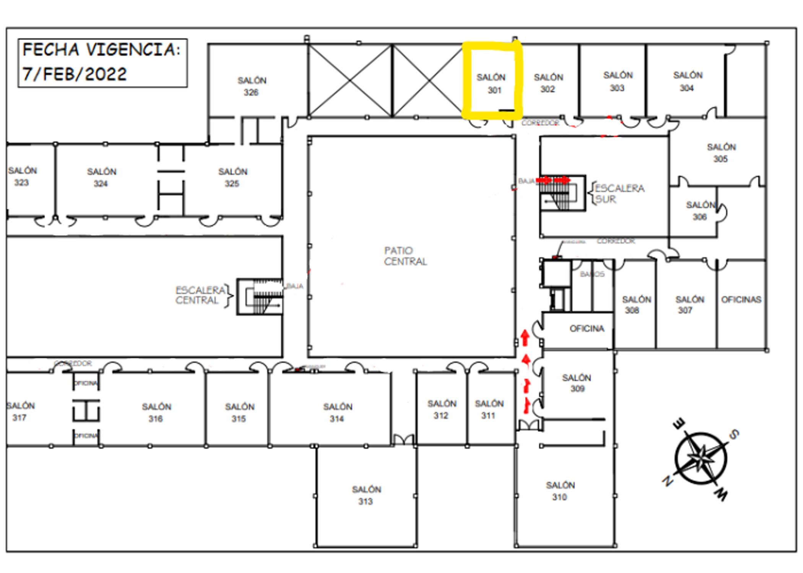
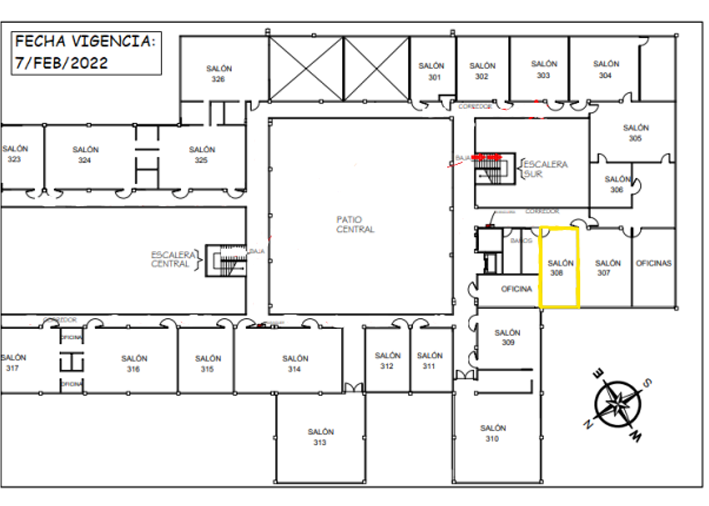
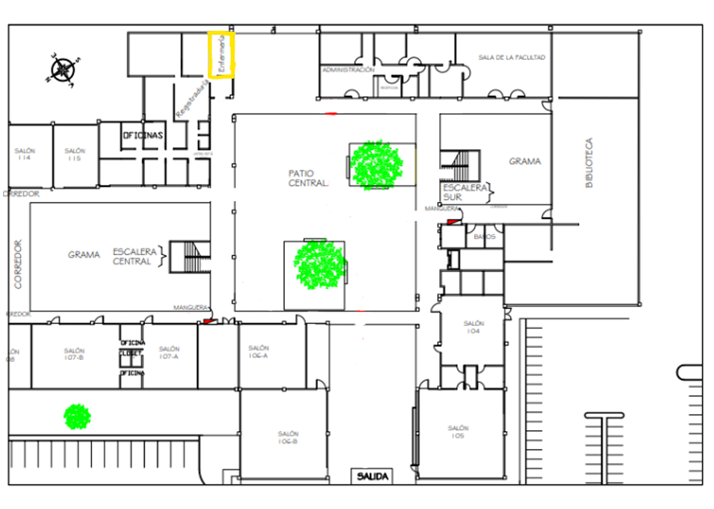
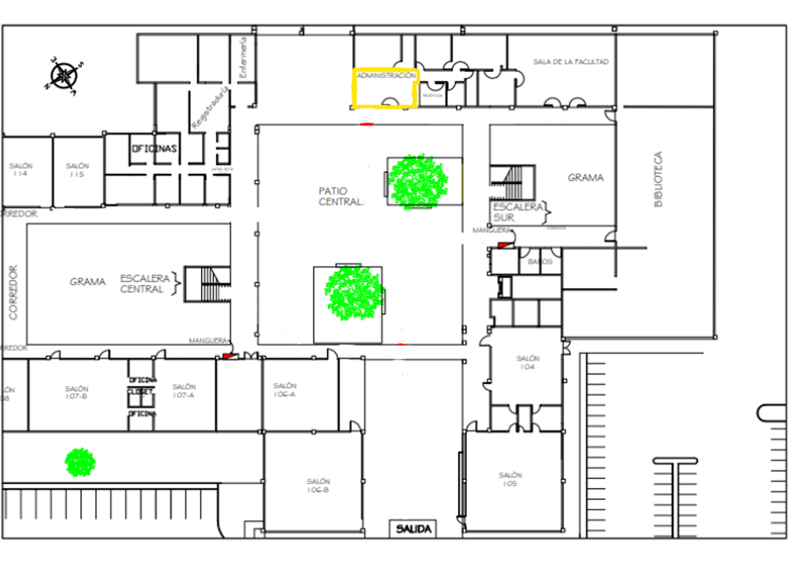

212
Este salón es el conocido por usarse para los estudiantes de Tesis para destacar en este mundo al que se le acecha a su futuro.
301
Este salón es utilizado por los estudiantes de tesis, al igual que 212.
308
Este lugar es uno más de lo que son de propiedad de tesis.
Registraduría

Aquí se tratan casos de créditos, así como la inscripción a estudio trabajo una facilidad que ofrece el instituto para como dice el nombre poder Ganar algo de dinero en el instituto mientras ayudas a los docentes en tu horario libre.
Sala de facultad
Esta oficina es en la que se ofrecen todas las conferencias así como las presentaciones de EDP así como otros sitios que quieran darle una orientación a los estudiantes del instituto.
Biblioteca
Este sitio es utilizado regularmente para estudios o tener una mejor concentración en algún tipo de lectura como a su vez este lugar funciona como un lugar para estar a solas
Enfermería
Esta oficina es un lugar en que van los estudiantes o docentes que tienen algún problema, ya sea físico o mental.
Administración
Aquí se ubican las oficinas de algunos profesores, así como también es un lugar en el que los mismos se reúnen.